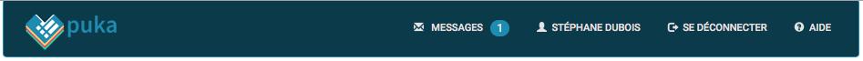
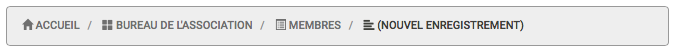
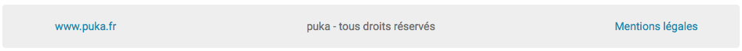

L’interface de puka¶
Ce chapitre va vous présenter l’interface de puka. Vous y découvrirez comment naviguer dans l’application.
L’entête de page¶
Cette section propose des éléments non liés à la page en cours de visualisation.

Vous y trouverez :
- un logo puka permettant de revenir à la page d’accueil ;
- un lien vers votre Messagerie puka, et le cas échéant, le nombre de messages non traités ;
- un lien vers votre Compte Utilisateur, où vous pourrez y modifier vos informations personnelles, vos préférences et votre licence ;
- un lien permettant de vous déconnecter ;
- un lien vers les rubriques d’aide.
Le fil d’Ariane¶
Cette barre de navigation, présente sur toutes les pages, à l’exception de la page d’accueil, permet d’indiquer dans quelle section vous vous trouvez. Active, il est possible de cliquer sur niveau de ce fil pour afficher les informations correspondantes.

L’arborescence pour les formulaires est la suivante :
Accueil / (équipe du formulaire si applicable) / nom du formulaire / (nom de la sous-section)
Le pied de page¶
Cette section propose des éléments fixes pour tous les utilisateurs.

Vous y trouverez :
- un lien vers la page internet de présentation de puka : www.puka.fr ;
- un message de copyright ;
- un lien vers le mentions légales applicables.